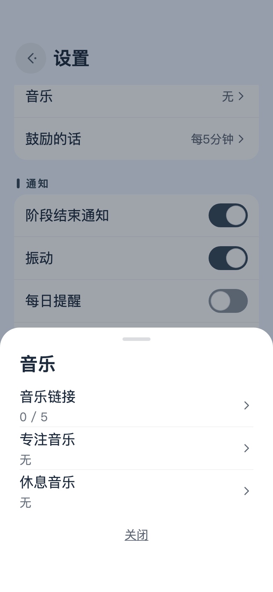
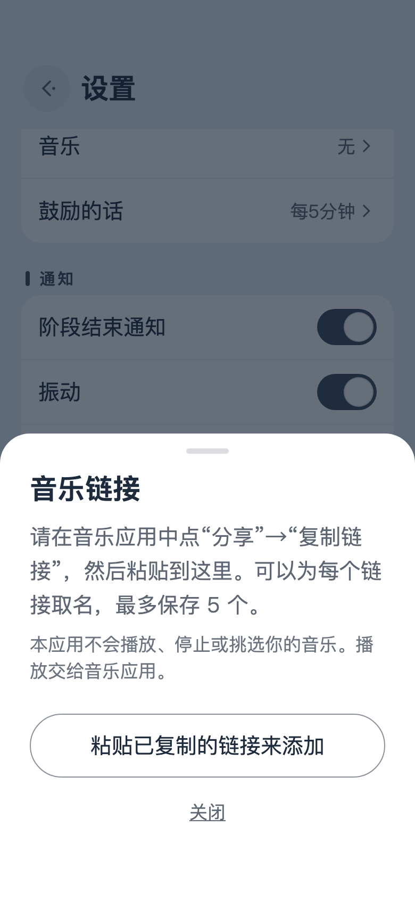
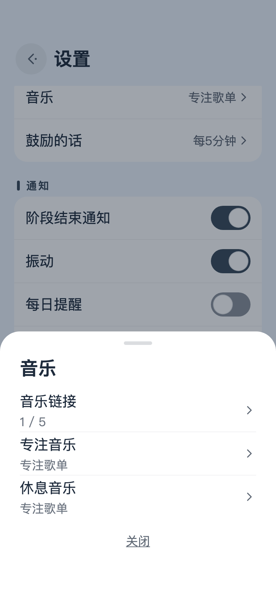
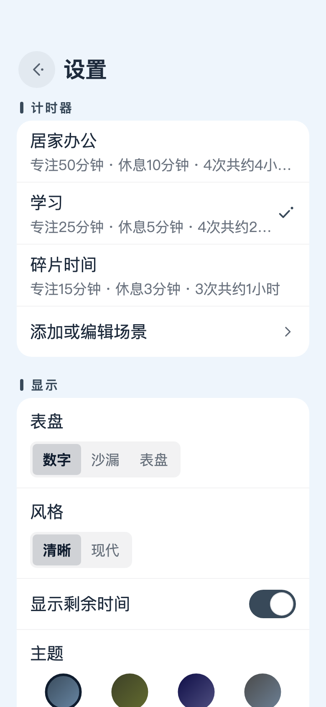

在 Amazon Music 里复制链接
- 打开想让它陪着你的歌单、专辑或者歌曲。
- 点分享按钮。找不到的话，分享就藏在“…”菜单里。
- 在弹出的列表里选复制链接。在 iPhone 上，有时只写着拷贝。
这个应用不放背景音乐，也不会打断你正在听的歌。音乐交给你平时用的那个应用。你能做的，是把喜欢的歌单链接存在这里，坐下来开始专注、或者起身去休息的时候，它就在手边。下面以 Amazon Music 为例，一步一步走一遍。



不一定非得是 Amazon Music。只要能从分享菜单里复制链接，换成哪个应用，步骤都一样。歌单可以，专辑、单曲、电台也都可以。最多能存五个，专注和休息也可以各选各的音乐。
链接在哪里打开，是手机决定的。装了音乐应用，通常就在应用里打开。没装，或者因为手机的设置，也可能在浏览器里打开。如果打开了却没有自己放起来，就在音乐应用里按一下播放。
在家埋头工作的一整天，和午休时的十五分钟，合适的节奏并不一样。在设置 › 计时器里选一个场景，专注时长、短休息、长休息，还有长休息前的轮数，都会一起换过来。
名称和时间，都可以在添加或编辑场景里改。也能加上自己的场景，总共最多五个。应用自带的三个，随时可以用恢复原来的时间回到最初的样子。

三个按钮。剩下的，把它往桌上一放，由它去就好。
按一下正中间的圆形按钮，专注就开始了。时间一到，画面换成“辛苦了！”，可以从那里开始休息。
左边的按钮是从头再来。右边的按钮往前走一步，专注就转入休息，休息就回到专注。计时器正在走或者暂停着的时候，它会先问你一句，手一滑点错了也不会有损失。
有时候不想看见数字，有时候又只想瞄一眼。点一下计时器，剩余时间会暂时出现，或者暂时隐去。设置不会因此改变。
屏幕中间的话，大约每五分钟悄悄换一次。等不及的话，在文字周围随便点一下，下一句就出来了。
从右上角的齿轮打开。要关上时，从左往右一划。计时器走着的时候，齿轮会藏起来。
如果把手机立在桌上，当一只小座钟来用，横屏会更自在。
时间到了，Take It Easy 会振动一下，再发一条通知告诉你。不会有闹铃响起。
第一次按下播放时，应用会问一句能不能发通知，计时器不等你回答就先走起来。以后想改主意，去设置 › 通知。如果那里写着“通知已关闭”，点打开系统设置，在那边允许就行。通知有没有提示音，跟随手机本身的设置。
每天一次，在你定好的时间轻轻提醒你。如果那天已经完成过一轮，它就不作声。
要是别的应用总来拍你的肩膀，不妨试试手机的专注模式。iPhone 上，打开控制中心，轻点专注模式，再选勿扰模式或工作。Android 上，从屏幕顶部向下滑两次，轻点勿扰。如果仍想收到阶段结束的通知，把 Take It Easy 加进允许的应用里。
这里没有广告，也不用注册账号。如果它在你桌上算是站稳了一席之地，可以从设置 › 其他 › 赞赏小费送一点小费。这会让开发继续走下去。
每一次赞赏都是单次付款。付了钱，功能一个也不会变，所以之后也没有什么需要恢复的。
它本来就是照着不出声做的。时间到了，会有振动和通知。如果收不到通知，请看看阶段结束通知。
不会。这个应用从不碰任何和音频有关的东西，所以既停不了其他应用的音乐，也不会把音量调小。
你复制的内容里，好像没有以 https:// 开头的链接。请在音乐应用的分享菜单里重新复制链接，再点一次粘贴已复制的链接来添加。链接前后夹着别的文字也没关系，只会保存链接本身。
链接交给哪个应用打开，是手机决定的。装了音乐应用，而且允许它打开自己的链接，就会在那里打开。可以试着重装音乐应用，或者看看手机里“默认打开”的设置。
主界面上计时器走着的时候，屏幕会一直亮着。停下来的时候，或者打开了设置、别的应用，屏幕就像平常一样熄灭。
会。应用先算好这一轮结束的时刻，再朝着那个时刻数，所以打开别的应用、关掉屏幕，都不会让它走偏。时间一到，会有通知告诉你。
你的设置、存下的链接和以往的累计，都只留在你的手机里，不去别处。详细情况写在隐私政策里。
用下来的感想也好，哪里出了毛病的报告也好，我们都心怀感激地读。方便的话，请附上手机型号、系统版本和应用版本（在设置的最下面），查找原因会容易得多。